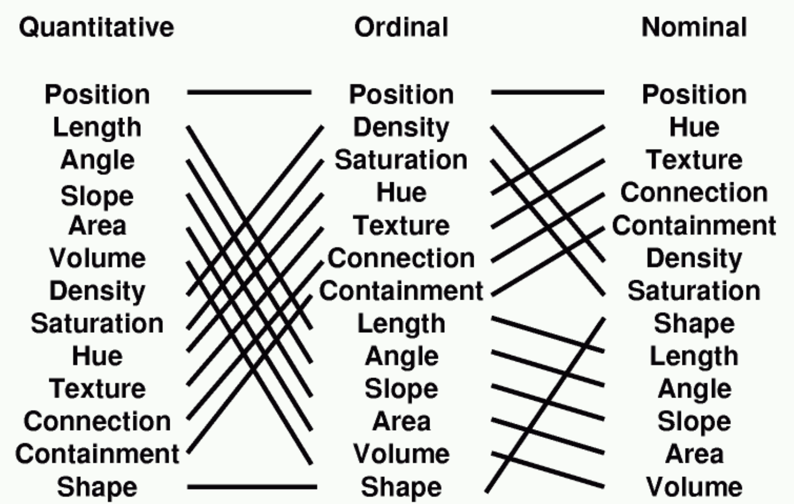
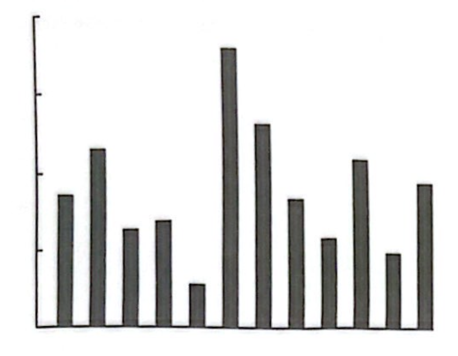
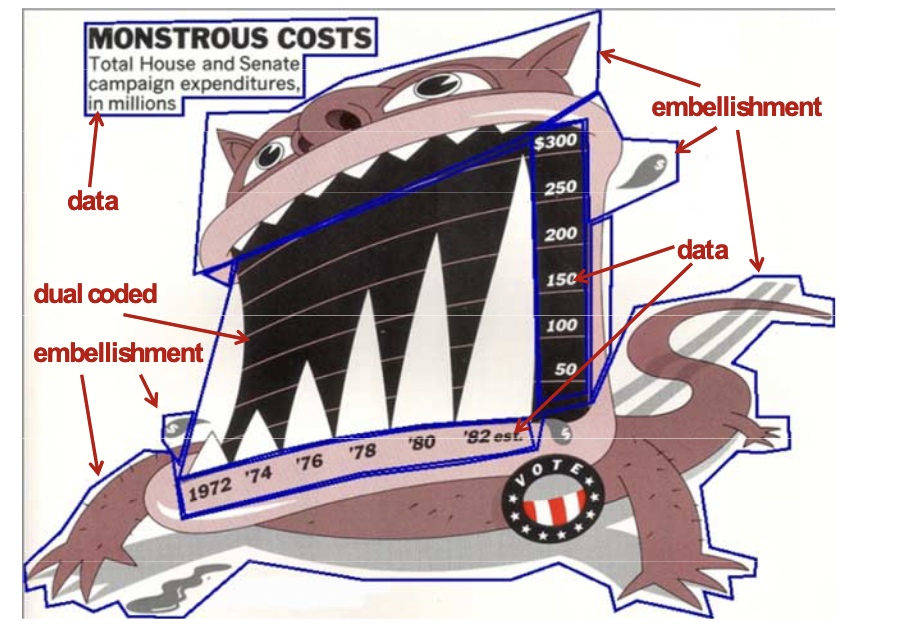

| name | region | income | population | lifeExpectancy | |
|---|---|---|---|---|---|
| 0 | Angola | Sub-Saharan Africa | 5055.59 | 12707546 | 47.58 |
| 1 | Benin | Sub-Saharan Africa | 1457.57 | 8294941 | 61.89 |
| 2 | Botswana | Sub-Saharan Africa | 12282.28 | 1638393 | 55.12 |
| 3 | Burkina Faso | Sub-Saharan Africa | 1234.42 | 14761339 | 53.38 |
| 4 | Burundi | Sub-Saharan Africa | 457.07 | 8691005 | 50.95 |
| 5 | Cameroon | Sub-Saharan Africa | 1997.18 | 18054929 | 51.39 |
| 6 | Cape Verde | Sub-Saharan Africa | 3456.14 | 426113 | 71.68 |
| 7 | Chad | Sub-Saharan Africa | 1557.83 | 10541156 | 48.97 |
| 8 | Comoros | Sub-Saharan Africa | 1016.42 | 731281 | 65.77 |
| 9 | Congo, Dem. Rep. | Sub-Saharan Africa | 358.80 | 66604314 | 47.81 |
| 10 | Congo, Rep. | Sub-Saharan Africa | 3834.67 | 3903318 | 53.75 |
| 11 | Cote d'Ivoire | Sub-Saharan Africa | 1520.23 | 18373060 | 57.86 |
| 12 | Equatorial Guinea | Sub-Saharan Africa | 15342.20 | 562339 | 50.64 |
| 13 | Eritrea | Sub-Saharan Africa | 548.37 | 5028475 | 60.03 |
| 14 | Ethiopia | Sub-Saharan Africa | 812.16 | 78254090 | 55.69 |
| 15 | Gabon | Sub-Saharan Africa | 12704.99 | 1484149 | 60.89 |
| 16 | Ghana | Sub-Saharan Africa | 1382.95 | 23336661 | 56.83 |
| 17 | Guinea | Sub-Saharan Africa | 908.86 | 10211437 | 58.35 |
| 18 | Guinea-Bissau | Sub-Saharan Africa | 568.94 | 1502442 | 48.20 |
| 19 | Kenya | Sub-Saharan Africa | 1493.53 | 36529155 | 54.95 |
Data Analytics and Visualization
0-2: Introduction to Visualization
Challenger Mission

Crew of 7: Dick Scobee, Michael Smith, Ellison Onizuka, Judith Resnik, Ronald McNair, Gregory Jarvis, and Chirsta McAuliffe.
A predictable failure

Plume indicating an O-ring failure at launch

Tragedy

Tufte’s take
“…there was a clear proximate cause: an inability to assess the link between cool temperature and O-ring damage on earlier flights…”
“…rocket engineers and managers needed a quick, smart analysis of evidence about the threat of cold to the O-rings, as well as an effective presentation of evidence in order to convince NASA offcials not to launch”
- Edward Tufte, Visual Explanations

Morton Thiokol Charts

Tufte’s version

Make informed descisions
The challenger disaster shows the importance of this
Exploration - Understand data

What are the differences between these 4 datasets?
Exploration - Understand data
We could try using some basic tools from statistics to answer this question. e.g. means, variances, corrleations, regression coefficients, etc.
Exploration - Understand data

They’re the same for every dataset?!?!
- Can we conclude that the datasets are all the same?
Jon Snow

John Snow

John Snow’s map

The source: A pump with contaminated water
Validation
Even if we think we know what’s going on, we should visualize to check our understanding!
- 1980: Jackman shows the effect of earlier work is dominated by an outlier

W. E. B. DuBois

Sociologist and civil rights activist W. E. B. Du Bois made many influential visualizations.
Nigel Holmes

Graphic designer Nigel Holmes is known for playful and informative visualizations.
Mona Chalabi

Contemporary data journalist Mona Chalabi uses visualization to create impactful stories and inspire activism.


Bertin: A Semiology of Graphics

Images perceived as a set of signs
Sender encodes information in signs
Receiver decodes information from signs
- Jacques Bertin - Sémiologie Graphique, 1967
Bertin’s visual variables

Exercise!
Sketch a visualization of this small dataset

Grammar of graphics


Original grammar of graphics was introduced by Leland Wilkinson

We’ll focus on an updated version from Hadley Wickham that forms the basis for ggplot2 and Let’s Plot.
Examples of visual encoding dimensions


Many different geometries

Scales are (usually) invertable functions
Most commonly a linear function

But can be non-linear, e.g. logarithmic
(Optional) Define a coordinate system
A coordinate system defines how the range of each scale is represented. Usually Cartesian coordinate system, but others are possible, such as polar

What did we find?

MacKinlay’s Ranking

Most effective representation may depend on the type of data

Some principles

From Jock MacKinlay
Express all the facts: overplotting
Overlapping points can make it impossible to tell the number of observations

How many total cars are represented?
Encode only the facts: consistency
The properties of the image (visual variables) should match the properties of the data

Nations are not ordinal!
Encode only the facts: ordering
Visual orderings convey meaning, even when there is none!
- “Because we are almost never interested in seeing Alabama first, it is astonishing how often data displays use alphabetical order as the organizing principle of choice” - Howard Wainer


Violations of these principles
The following charts from Morton Thiokol documented O-ring damage on pre-challenger flights

What principle(s) are violated here?
Tufte’s fixes
Temperature is more important than date!

Tufte’s fixes
Ordering alone doesn’t effectively convey differences!

More principles!
From Edward Tufte
Data-ink ratio
Heuristic for visual complexity
Low data-ink ratio (William Playfair 1785): 
High data-ink ratio (William Playfair 1786): 
Maximal data-ink ratio: EEG
Can’t erase anything without losing information

Data-ink ratio
Can be used to guide visual design (Revise and edit!):

A simple bar chart
and the axis rule

We can remove the outline
even re-encode the axis with whitespace!
Data-ink ratio
Can convey more information.
- Here the axes convey the extents of the data

Data-ink ratio
Can be used to derive new forms

John Tukey’s box plot
Tufte’s simplification
Data-ink ratio
Sometimes Tufte went a little far… 
Is this really better?
Chart junk
Distracting patterns and unnecessary artistic embelishment

A typical example
Distracting patterns
Patterns can introduce visual artifacts and distract from the data.

Unnecessary artistic embellishment
Which conveys data more effectively?
“This may be the worst graphic ever put into print”

Artistic embellishment
Which plot is more clear? Which is more memorable?

Nigel Holmes’ visual

A simplified visual
A perceptual study
Bateman et. al. put this to the test!
- Subjects compared several plots from Holmes to simplified charts.

The results
Subject better remembered the charts with “junk”!
- Especially in the long term

The results
They also preferred them

Tufte’s answer: Charles Minard’s visualization of Napoleon’s march